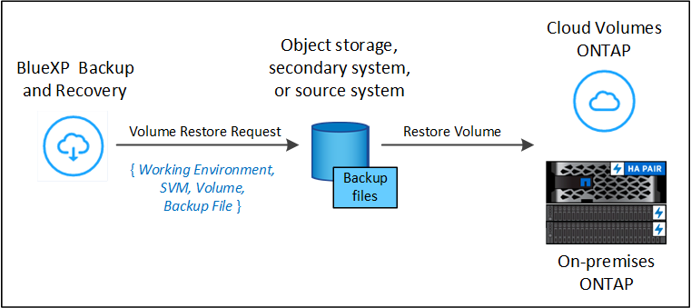
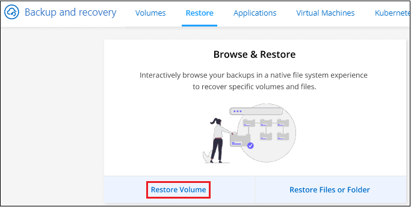
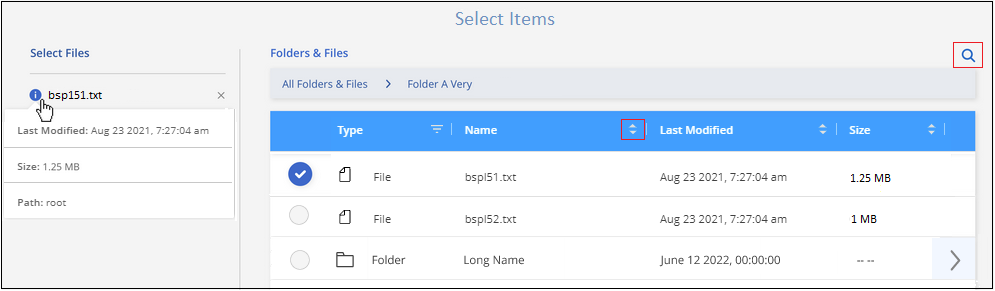
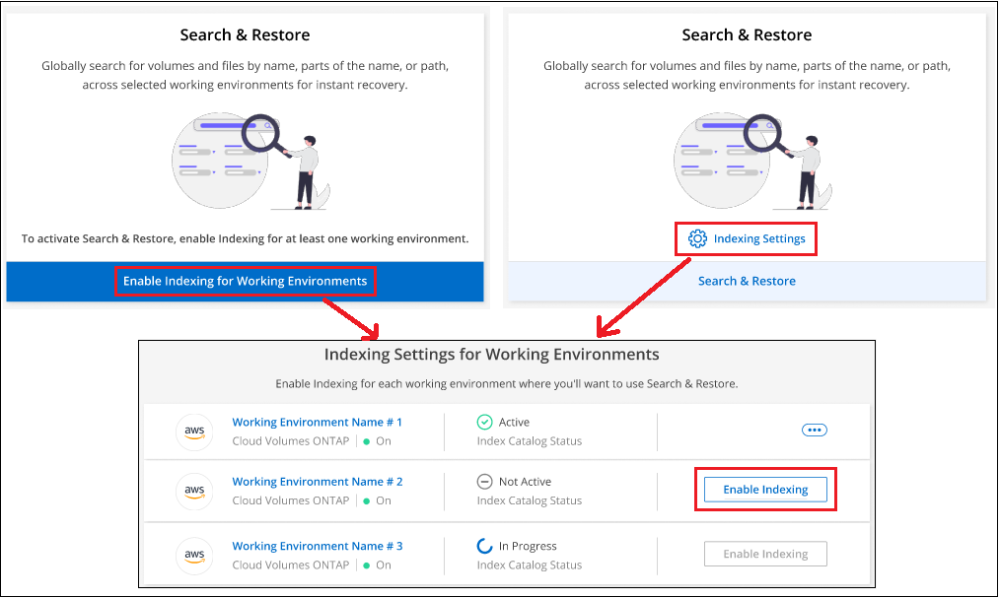
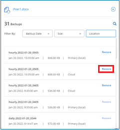

Notas de la versión
Notas de la versión
Restaurar datos de ONTAP de archivos de backup
 Sugerir cambios
Sugerir cambios
Los backups de tus datos de volúmenes de ONTAP están disponibles desde las ubicaciones donde se crearon los backups: Copias Snapshot, volúmenes replicados y backups almacenados en el almacenamiento de objetos. Es posible restaurar datos desde un momento específico desde cualquiera de estas ubicaciones de backups. Es posible restaurar un volumen completo de ONTAP desde un archivo de backup, o bien, si solo necesita restaurar unos pocos archivos, puede restaurar una carpeta o archivos individuales.
-
Puede restaurar un volumen (como un volumen nuevo) al entorno de trabajo original, a un entorno de trabajo diferente que utiliza la misma cuenta de cloud o a un sistema ONTAP local.
-
Puede restaurar una carpeta ** en un volumen del entorno de trabajo original, en un volumen de un entorno de trabajo diferente que utiliza la misma cuenta de cloud o en un volumen de un sistema ONTAP local.
-
Puede restaurar archivos en un volumen del entorno de trabajo original, en un volumen de un entorno de trabajo diferente que utiliza la misma cuenta de cloud o en un volumen de un sistema ONTAP local.
Se requiere una licencia válida de backup y recuperación de BlueXP para restaurar los datos desde los archivos de backup a un sistema de producción.
En resumen, estos son los flujos válidos que se pueden utilizar para restaurar los datos de volúmenes en un entorno de trabajo de ONTAP:
-
Archivo de backup → Volumen restaurado
-
Volumen replicado → Volumen restaurado
-
Copia Snapshot → Volumen restaurado
La Consola de restauración
Restore Dashboard se utiliza para realizar operaciones de volumen, carpeta y restauración de archivos. Para acceder al Panel de restauración, haga clic en copia de seguridad y recuperación en el menú BlueXP y, a continuación, haga clic en la ficha Restaurar. También puede hacer clic en  > Ver el Panel de restauración desde el servicio de copia de seguridad y recuperación desde el panel Servicios.
> Ver el Panel de restauración desde el servicio de copia de seguridad y recuperación desde el panel Servicios.

|
El backup y la recuperación de BlueXP deben estar activados al menos en un entorno de trabajo y deben existir archivos de copia de seguridad iniciales. |

Como puede ver, Restore Dashboard ofrece dos formas diferentes de restaurar datos de archivos de copia de seguridad: Browse & Restore y Search & Restore.
Comparación de examinar y restaurar y buscar y restaurar
En términos generales, Browse & Restore suele ser mejor cuando necesita restaurar un volumen, carpeta o archivo específico de la última semana o mes, y sabe el nombre y la ubicación del archivo y la fecha en la que estaba en buen estado. Search & Restore suele ser mejor cuando necesita restaurar un volumen, una carpeta o un archivo, pero no recuerda el nombre exacto, ni el volumen en el que reside, ni la fecha en la que estaba en buen estado por última vez.
Esta tabla proporciona una comparación de características de los métodos 2.
| Examinar y restaurar | Búsqueda y restauración |
|---|---|
Examine una estructura de estilo de carpeta para encontrar el volumen, la carpeta o el archivo en un único archivo de copia de seguridad. |
Busque un volumen, carpeta o archivo a través de todos los archivos de copia de seguridad por nombre de volumen parcial o completo, nombre de carpeta/archivo parcial o completo, rango de tamaño y filtros de búsqueda adicionales. |
No gestiona la recuperación de archivos si el archivo se ha eliminado o cambiado de nombre y el usuario no conoce el nombre de archivo original |
Controla los directorios recién creados, eliminados y renombrados y los archivos recién creados, eliminados y renombrados |
No se requieren recursos de proveedor de cloud adicionales |
Al realizar la restauración desde el cloud, es necesario utilizar el bucket adicional y los recursos de proveedor de cloud público por cuenta. |
No requiere costes de proveedor de cloud adicionales |
Al restaurar desde el cloud, se necesitan costes adicionales al analizar los backups y los volúmenes para los resultados de búsqueda. |
Es compatible con la restauración rápida. |
No se admite la restauración rápida. |
Esta tabla proporciona una lista de operaciones de restauración válidas en función de la ubicación en la que residen los archivos de copia de seguridad.
| Tipo de backup | Examinar y restaurar | Búsqueda y restauración | ||||
|---|---|---|---|---|---|---|
Restaurar volumen |
Restaurar archivos |
Restaurar carpeta |
Restaurar volumen |
Restaurar archivos |
Restaurar carpeta |
|
Copia Snapshot |
Sí |
No |
No |
Sí |
Sí |
Sí |
Volumen replicado |
Sí |
No |
No |
Sí |
Sí |
Sí |
Archivo de copia de seguridad |
Sí |
Sí |
Sí |
Sí |
Sí |
Sí |
Antes de poder utilizar cualquiera de estos métodos de restauración, asegúrese de haber configurado el entorno para los requisitos específicos de recurso. Estos requisitos se describen en las secciones siguientes.
Consulte los requisitos y los pasos de restauración para el tipo de operación de restauración que desea usar:
-
<<Restoring volumes using Browse & Restore,Restaure volúmenes mediante la función examinar Restore
-
<<Restoring folders and files using Browse & Restore,Restaure carpetas y archivos utilizando examinar Restore
-
<<Restoring ONTAP data using Search & Restore,Restaure volúmenes, carpetas y archivos mediante la función de restauración de de búsqueda
Restaure datos de ONTAP mediante Examinar y Restaurar
Antes de empezar a restaurar un volumen, una carpeta o un archivo, debe conocer el nombre del volumen desde el que desea restaurar, el nombre del entorno de trabajo y la SVM donde reside el volumen, así como la fecha aproximada del archivo de backup del que desea restaurar. Es posible restaurar datos de ONTAP desde una copia Snapshot, un volumen replicado o desde backups almacenados en el almacenamiento de objetos.
Nota: Si el archivo de copia de seguridad que contiene los datos que desea restaurar reside en el almacenamiento en la nube de archivos (a partir de ONTAP 9.10.1), la operación de restauración tomará más tiempo y incurrirá en un costo. Además, el clúster de destino también debe ejecutar ONTAP 9.10.1 o superior para la restauración de volúmenes, 9.11.1 para la restauración de archivos, 9.12.1 para Google Archive y StorageGRID y 9.13.1 para la restauración de carpetas.
|
|
La prioridad alta no es compatible cuando se restauran los datos desde el almacenamiento de archivado de Azure en sistemas StorageGRID. |
Examinar y restaurar entornos de trabajo compatibles y proveedores de almacenamiento de objetos
Es posible restaurar datos ONTAP desde un archivo de backup que se encuentra en un entorno de trabajo secundario (un volumen replicado) o en almacenamiento de objetos (un archivo de backup) para los siguientes entornos de trabajo. Las copias Snapshot residen en el entorno de trabajo de origen y se pueden restaurar únicamente en ese mismo sistema.
Nota: Puede restaurar un volumen desde cualquier tipo de archivo de copia de seguridad, pero puede restaurar una carpeta o archivos individuales solo desde un archivo de copia de seguridad en el almacenamiento de objetos en este momento.
Desde Object Store (Backup) |
Desde primario (Snapshot) |
Desde el Sistema Secundario (Replicación) |
Al entorno de trabajo de destino |
Azure Blob |
Cloud Volumes ONTAP en Azure |
Cloud Volumes ONTAP en Azure |
Google Cloud Storage |
Cloud Volumes ONTAP en Google |
Cloud Volumes ONTAP en Google on-local ONTAP system endif::gcp[] |
StorageGRID de NetApp |
Sistema ONTAP en las instalaciones |
Sistema ONTAP en las instalaciones |
Al sistema ONTAP en las instalaciones |
ONTAP S3 |
Sistema ONTAP en las instalaciones |
Para examinar y restaurar, el conector se puede instalar en las siguientes ubicaciones:
-
Para Azure Blob, el conector se puede poner en marcha en Azure o en sus instalaciones
-
Para StorageGRID, el conector debe estar desplegado en sus instalaciones, con o sin acceso a Internet
-
Para ONTAP S3, el conector se puede implementar en sus instalaciones (con o sin acceso a Internet) o en un entorno de proveedor de cloud
Tenga en cuenta que las referencias a "sistemas ONTAP en las instalaciones" incluyen sistemas FAS, AFF y ONTAP Select.
|
|
Si la versión de ONTAP de su sistema es inferior a 9.13.1, no podrá restaurar carpetas o archivos si el archivo de copia de seguridad se ha configurado con DataLock & Ransomware. En este caso, es posible restaurar todo el volumen desde el archivo de backup y, a continuación, acceder a los archivos necesarios. |
Restaure volúmenes mediante la función examinar & Restore
Cuando se restaura un volumen a partir de un archivo de backup, el backup y la recuperación de BlueXP crean un volumen new con los datos del backup. Al utilizar un backup a partir del almacenamiento de objetos, es posible restaurar los datos en un volumen en el entorno de trabajo original, en un entorno de trabajo diferente ubicado en la misma cuenta de cloud que el entorno de trabajo de origen o en un sistema ONTAP on-premises.
Al restaurar un backup en el cloud en un sistema Cloud Volumes ONTAP con ONTAP 9.13.0 o posterior o en un sistema ONTAP en las instalaciones que ejecute ONTAP 9.14.1, tendrá la opción de realizar una operación de restauración rápida. La restauración rápida es ideal para situaciones de recuperación ante desastres en las que se necesita proporcionar acceso a un volumen lo antes posible. Una restauración rápida restaura los metadatos del archivo de backup a un volumen en lugar de restaurar todo el archivo de backup. No se recomienda la restauración rápida para aplicaciones sensibles al rendimiento ni a la latencia, ni se admite con backups en el almacenamiento archivado.
|
|
La restauración rápida solo es compatible con los volúmenes de FlexGroup si el sistema de origen desde el cual se creó el backup de cloud ejecutaba ONTAP 9.12.1 o posterior. Y solo se admite para volúmenes de SnapLock si el sistema de origen ejecutaba ONTAP 9.11.0 o posterior. |
Al restaurar desde un volumen replicado, puede restaurar el volumen en el entorno de trabajo original o en un sistema Cloud Volumes ONTAP o ONTAP on-premises.

Como puede ver, tendrá que conocer el nombre del entorno de trabajo de origen, la máquina virtual de almacenamiento, el nombre del volumen y la fecha del archivo de backup para realizar una restauración de volumen.
En el siguiente vídeo se muestra un tutorial rápido sobre cómo restaurar un volumen:
-
En el menú BlueXP, seleccione Protección > copia de seguridad y recuperación.
-
Haga clic en la ficha Restaurar y aparecerá el Panel de restauración.
-
En la sección Browse & Restore, haga clic en Restore Volume.

-
En la página Select Source, desplácese hasta el archivo de copia de seguridad del volumen que desea restaurar. Seleccione entorno de trabajo, volumen y el archivo copia de seguridad que tiene la Marca de fecha/hora desde la que desea restaurar.
La columna Ubicación muestra si el archivo de copia de seguridad (instantánea) es Local (una copia de Snapshot en el sistema de origen), Secundario (un volumen replicado en un sistema ONTAP secundario) o Almacenamiento de objetos (un archivo de copia de seguridad en el almacenamiento de objetos). Elija el archivo que desea restaurar.

-
Haga clic en Siguiente.
Tenga en cuenta que si selecciona un archivo de backup en el almacenamiento de objetos y la protección contra ransomware está activa para ese backup (si habilitó DataLock y Ransomware Protection en la política de backup), se le pedirá que ejecute un análisis de ransomware adicional en el archivo de backup antes de restaurar los datos. Se recomienda que escanee el archivo de backup como ransomware. (Incurrirá en costes adicionales de salida de su proveedor de cloud para acceder al contenido del archivo de backup).
-
En la página Select Destination, seleccione entorno de trabajo donde desea restaurar el volumen.

-
Al restaurar un archivo de backup desde el almacenamiento de objetos, si selecciona un sistema ONTAP en las instalaciones y aún no configuró la conexión del clúster con el almacenamiento de objetos, se le pedirá información adicional:
-
Al restaurar desde Azure Blob, seleccione el espacio IP en el clúster de ONTAP donde reside el volumen de destino, seleccione la suscripción de Azure para acceder al almacenamiento de objetos y, opcionalmente, elija un extremo privado para la transferencia de datos segura mediante la selección de la red y la subred.
-
Al restaurar desde StorageGRID, introduzca el FQDN del servidor StorageGRID y el puerto que ONTAP debe usar para la comunicación HTTPS con StorageGRID, seleccione la clave de acceso y la clave secreta necesarias para acceder al almacenamiento de objetos, y el espacio IP del clúster ONTAP donde reside el volumen de destino.
-
Cuando se restaure desde ONTAP S3, introduzca el FQDN del servidor ONTAP S3 y el puerto que ONTAP debe utilizar para la comunicación HTTPS con ONTAP S3, seleccione la clave de acceso y la clave secreta necesarias para acceder al almacenamiento de objetos. y el espacio IP del clúster de ONTAP donde residirá el volumen de destino.
-
Introduzca el nombre que desea usar para el volumen restaurado y seleccione la máquina virtual de almacenamiento y el agregado donde reside el volumen. Cuando restaure un volumen de FlexGroup, deberá seleccionar varios agregados. De forma predeterminada, se utiliza <source_volume_name>_restore como nombre del volumen.

Al restaurar un backup desde un almacenamiento de objetos a un sistema Cloud Volumes ONTAP mediante ONTAP 9.13.0 o posterior, o a un sistema ONTAP on-premises que ejecuta ONTAP 9.14.1, tendrá la opción de realizar una operación quick restore.
Además, si va a restaurar el volumen a partir de un archivo de backup que reside en un nivel de almacenamiento de archivado (disponible a partir de ONTAP 9.10.1), puede seleccionar la prioridad de restauración.
-
-
-
Haga clic en Siguiente para elegir si desea realizar una restauración normal o un proceso de restauración rápida:

-
Restauración normal: Utilice la restauración normal en volúmenes que requieren un alto rendimiento. Los volúmenes no estarán disponibles hasta que se complete el proceso de restauración.
-
Restauración rápida: Volúmenes y datos restaurados estarán disponibles inmediatamente. No lo use en volúmenes que requieran un alto rendimiento porque, durante el proceso de restauración rápida, el acceso a los datos puede ser más lento que lo habitual.
-
-
Haga clic en Restaurar y volverá al Panel de restauración para que pueda revisar el progreso de la operación de restauración.
El backup y la recuperación de BlueXP crea un nuevo volumen basado en el backup que has seleccionado.
Tenga en cuenta que la restauración de un volumen a partir de un archivo de backup que reside en el almacenamiento de archivado puede tardar varios minutos u horas, según el nivel de archivado y la prioridad de restauración. Puede hacer clic en la ficha Supervisión de trabajos para ver el progreso de la restauración.
Restaure carpetas y archivos utilizando examinar & Restore
Si solo necesita restaurar algunos archivos desde un backup de volumen de ONTAP, puede optar por restaurar una carpeta o archivos individuales en lugar de restaurar el volumen completo. Es posible restaurar carpetas y archivos a un volumen existente en el entorno de trabajo original o a un entorno de trabajo diferente que utilice la misma cuenta de cloud. También puede restaurar carpetas y archivos en un volumen de un sistema ONTAP en las instalaciones.
|
|
Puede restaurar una carpeta o archivos individuales solo desde un archivo de backup en el almacenamiento de objetos en este momento. Actualmente no es posible restaurar archivos y carpetas desde una copia Snapshot local ni desde un archivo de backup que se encuentra en un entorno de trabajo secundario (un volumen replicado). |
Si selecciona varios archivos, todos los archivos se restauran en el mismo volumen de destino que se elija. Por lo tanto, si desea restaurar archivos en diferentes volúmenes, deberá ejecutar el proceso de restauración varias veces.
Si utiliza ONTAP 9.13.0 o superior, puede restaurar una carpeta junto con todos los archivos y subcarpetas dentro de ella. Cuando se utiliza una versión de ONTAP anterior a la 9.13.0, solo se restauran los archivos de esa carpeta, no se restauran ni las subcarpetas ni los archivos de esas carpetas.
|
|
|
Requisitos previos
-
La versión de ONTAP debe ser 9.6 o superior para realizar operaciones de restauración File.
-
La versión de ONTAP debe ser 9.11.1 o superior para realizar operaciones de restauración de folder. Se requiere ONTAP versión 9.13.1 si los datos se encuentran en el almacenamiento de archivado o si el archivo de copia de seguridad utiliza DataLock y protección contra ransomware.
Proceso de restauración de carpetas y archivos
El proceso va como este:
-
Cuando desee restaurar una carpeta o uno o más archivos desde una copia de seguridad de volumen, haga clic en la ficha Restaurar y haga clic en Restaurar archivos o carpeta en Browse & Restore.
-
Seleccione el entorno de trabajo de origen, el volumen y el archivo de copia de seguridad en el que residen la carpeta o los archivos.
-
La copia de seguridad y recuperación de BlueXP muestra las carpetas y archivos que existen dentro del archivo de copia de seguridad seleccionado.
-
Seleccione la carpeta o los archivos que desea restaurar a partir de esa copia de seguridad.
-
Seleccione la ubicación de destino en la que desea restaurar la carpeta o los archivos (el entorno de trabajo, el volumen y la carpeta) y haga clic en Restaurar.
-
Se restauran los archivos.

Como puede ver, necesita conocer el nombre del entorno de trabajo, el nombre del volumen, la fecha del archivo de copia de seguridad y el nombre de carpeta/archivo para realizar una restauración de carpetas o archivos.
Restaurar carpetas y archivos
Siga estos pasos para restaurar carpetas o archivos en un volumen a partir de un backup de volumen de ONTAP. Debe conocer el nombre del volumen y la fecha del archivo de backup que desea utilizar para restaurar la carpeta o los archivos. Esta funcionalidad utiliza Live Browsing para que pueda ver la lista de directorios y archivos dentro de cada archivo de copia de seguridad.
El siguiente vídeo muestra un tutorial rápido sobre cómo restaurar un único archivo:
-
En el menú BlueXP, seleccione Protección > copia de seguridad y recuperación.
-
Haga clic en la ficha Restaurar y aparecerá el Panel de restauración.
-
En la sección Browse & Restore, haga clic en Restaurar archivos o carpeta.

-
En la página Select Source, desplácese hasta el archivo de copia de seguridad del volumen que contiene la carpeta o los archivos que desea restaurar. Seleccione entorno de trabajo, volumen y copia de seguridad que tenga la Marca de fecha/hora desde la que desea restaurar archivos.

-
Haga clic en Siguiente y aparecerá la lista de carpetas y archivos de la copia de seguridad de volumen.
Si va a restaurar carpetas o archivos desde un archivo de copia de seguridad que reside en un nivel de almacenamiento de archivado, puede seleccionar la prioridad de restauración.
+
Y, si la protección contra ransomware está activa para el archivo de backup (si habilitó DataLock y Ransomware Protection en la política de backup), se le pedirá que ejecute un análisis adicional de ransomware en el archivo de backup antes de restaurar los datos. Se recomienda que escanee el archivo de backup como ransomware. (Incurrirá en costes adicionales de salida de su proveedor de cloud para acceder al contenido del archivo de backup).
+ 
-
En la página Select ITEMS, seleccione la carpeta o los archivos que desea restaurar y haga clic en continuar. Para ayudarle a encontrar el elemento:
-
Si lo ve, puede hacer clic en la carpeta o en el nombre del archivo.
-
Puede hacer clic en el icono de búsqueda e introducir el nombre de la carpeta o archivo para desplazarse directamente al elemento.
-
Puede desplazarse por los niveles de las carpetas mediante
 al final de la fila para buscar archivos específicos.
al final de la fila para buscar archivos específicos.A medida que seleccione los archivos, se agregarán a la parte izquierda de la página para que pueda ver los archivos que ya ha elegido. Si es necesario, puede eliminar un archivo de esta lista haciendo clic en x junto al nombre del archivo.
-
-
En la página Select Destination, seleccione entorno de trabajo donde desea restaurar los elementos.

Si selecciona un clúster en las instalaciones y no ha configurado todavía la conexión de clúster con el almacenamiento de objetos, se le pedirá información adicional:
-
Al restaurar desde Azure Blob, introduzca el espacio IP en el clúster de ONTAP donde reside el volumen de destino. También puede seleccionar una configuración de extremo privado para la conexión con el clúster.
-
Al restaurar desde StorageGRID, introduzca el FQDN del servidor StorageGRID y el puerto que ONTAP debe usar para la comunicación HTTPS con StorageGRID, introduzca la clave de acceso y la clave secreta necesarias para acceder al almacenamiento de objetos, y el espacio IP del clúster ONTAP en el que reside el volumen de destino.
-
A continuación, seleccione volumen y carpeta donde desea restaurar la carpeta o los archivos.

-
Tiene varias opciones para la ubicación al restaurar carpetas y archivos.
-
Cuando haya elegido Seleccionar carpeta de destino, como se muestra arriba:
-
Puede seleccionar cualquier carpeta.
-
Puede pasar el ratón sobre una carpeta y hacer clic en
al final de la fila para explorar subcarpetas y, a continuación, seleccione una carpeta.
-
-
Si ha seleccionado el mismo entorno de trabajo y volumen de destino en el que se encontraba la carpeta/archivo de origen, puede seleccionar mantener ruta de carpeta de origen para restaurar la carpeta o archivos a la misma carpeta en la que existían en la estructura de origen. Ya deben existir todas las mismas carpetas y subcarpetas; no se crean las carpetas. Al restaurar los archivos a su ubicación original, puede elegir sobrescribir los archivos de origen o crear nuevos archivos.
-
Haga clic en Restaurar y volverá al Panel de restauración para que pueda revisar el progreso de la operación de restauración. También puede hacer clic en la ficha Supervisión de trabajos para ver el progreso de la restauración.
-
-
Restaurar datos de ONTAP mediante la opción Buscar y restaurar
Es posible restaurar un volumen, una carpeta o archivos desde un archivo de backup de ONTAP mediante Search & Restore. Search & Restore permite buscar un volumen, una carpeta o un archivo específicos de todos los backups y, a continuación, ejecutar una restauración. No es necesario que sepa el nombre exacto del entorno de trabajo, el nombre del volumen o el nombre de archivo; la búsqueda busca a través de todos los archivos de copia de seguridad del volumen.
La operación de búsqueda busca todas las copias Snapshot locales que existen para los volúmenes ONTAP, todos los volúmenes replicados en los sistemas de almacenamiento secundario y todos los archivos de backup existentes en el almacenamiento de objetos. Como restaurar datos desde una copia Snapshot local o un volumen replicado puede ser más rápido y menos costoso que la restauración desde un archivo de backup en un almacenamiento de objetos, quizás desee restaurar datos desde estas otras ubicaciones.
Cuando restaura un full volume desde un archivo de backup, el backup y la recuperación de BlueXP crean un volumen new con los datos del backup. Puede restaurar los datos como un volumen en el entorno de trabajo original, en un entorno de trabajo diferente ubicado en la misma cuenta de cloud que el entorno de trabajo de origen o en un sistema ONTAP on-premises.
Puede restaurar carpetas o archivos a la ubicación del volumen original, a otro volumen en el mismo entorno de trabajo, a un entorno de trabajo diferente que utilice la misma cuenta de cloud o a un volumen en un sistema ONTAP local.
Si utiliza ONTAP 9.13.0 o superior, puede restaurar una carpeta junto con todos los archivos y subcarpetas dentro de ella. Cuando se utiliza una versión de ONTAP anterior a la 9.13.0, solo se restauran los archivos de esa carpeta, no se restauran ni las subcarpetas ni los archivos de esas carpetas.
Si el archivo de backup del volumen que desea restaurar reside en el almacenamiento de archivado (disponible a partir de ONTAP 9.10.1), la operación de restauración tardará más tiempo y generará costes adicionales. Tenga en cuenta que el clúster de destino también debe ejecutar ONTAP 9.10.1 o superior para la restauración de volúmenes, 9.11.1 para la restauración de archivos, 9.12.1 para Google Archive y StorageGRID y 9.13.1 para la restauración de carpetas.
|
|
|
Antes de empezar, debe tener idea del nombre o la ubicación del volumen o el archivo que desea restaurar.
El siguiente vídeo muestra un tutorial rápido sobre cómo restaurar un único archivo:
Entornos de trabajo compatibles con Search & Restore y proveedores de almacenamiento de objetos
Es posible restaurar datos ONTAP desde un archivo de backup que se encuentra en un entorno de trabajo secundario (un volumen replicado) o en almacenamiento de objetos (un archivo de backup) para los siguientes entornos de trabajo. Las copias Snapshot residen en el entorno de trabajo de origen y se pueden restaurar únicamente en ese mismo sistema.
Nota: Puede restaurar volúmenes y archivos de cualquier tipo de archivo de copia de seguridad, pero puede restaurar una carpeta solo desde archivos de copia de seguridad en el almacenamiento de objetos en este momento.
| Ubicación del archivo de copia de seguridad | Entorno de trabajo de destino | |
|---|---|---|
Almacén de objetos (Backup) |
Sistema secundario (Replicación) |
ifdef::aws[] |
Amazon S3 |
Cloud Volumes ONTAP en AWS |
Cloud Volumes ONTAP en la endif del sistema ONTAP en las instalaciones de AWS::aws[] ifdef::Azure[] |
Azure Blob |
Cloud Volumes ONTAP en Azure |
Cloud Volumes ONTAP en Azure on-premises ONTAP system endif::Azure[] ifdef::gcp[] |
Google Cloud Storage |
Cloud Volumes ONTAP en Google |
Cloud Volumes ONTAP en Google on-local ONTAP system endif::gcp[] |
StorageGRID de NetApp |
Sistema ONTAP en las instalaciones |
Sistema ONTAP en las instalaciones |
ONTAP S3 |
Sistema ONTAP en las instalaciones |
Sistema ONTAP en las instalaciones |
Para Buscar y restaurar, el conector se puede instalar en las siguientes ubicaciones:
-
Para Azure Blob, el conector se puede poner en marcha en Azure o en sus instalaciones
-
Para StorageGRID, el conector debe estar desplegado en sus instalaciones, con o sin acceso a Internet
-
Para ONTAP S3, el conector se puede implementar en sus instalaciones (con o sin acceso a Internet) o en un entorno de proveedor de cloud
Tenga en cuenta que las referencias a "sistemas ONTAP en las instalaciones" incluyen sistemas FAS, AFF y ONTAP Select.
Requisitos previos
-
Requisitos del clúster:
-
La versión de ONTAP debe ser 9.8 o superior.
-
La máquina virtual de almacenamiento (SVM) en la que reside el volumen debe tener una LIF de datos configurada.
-
Debe habilitarse NFS en el volumen (se admiten los volúmenes NFS y SMB/CIFS).
-
El servidor RPC de SnapDiff debe estar activado en la SVM. BlueXP hace esto automáticamente al activar la indización en el entorno de trabajo. (SnapDiff es la tecnología que identifica rápidamente las diferencias en archivos y directorios entre las copias snapshot).
-
-
Requisitos de Azure:
-
Debe registrar el proveedor de recursos de Azure Synapse Analytics (llamado "Microsoft.Synapse") en su suscripción. "Vea cómo registrar este proveedor de recursos para su suscripción". Debe ser Subscription Owner o Contributor para registrar el proveedor de recursos.
-
Los permisos específicos de cuentas de almacenamiento de áreas de trabajo y lagos de datos de Azure Synapse deben agregarse a la función de usuario que proporciona permisos a BlueXP. "Asegúrese de que todos los permisos estén configurados correctamente".
Tenga en cuenta que, si ya estaba utilizando el backup y la recuperación de BlueXP con un conector que configuró en el pasado, deberá añadir los permisos de la cuenta de almacenamiento de lago de datos y espacio de trabajo de Azure Synapse Workspace ahora al rol de usuario de BlueXP. Son necesarios para buscar y restaurar.
-
El conector debe configurarse sin un servidor proxy para la comunicación HTTP a Internet. Si ha configurado un servidor proxy HTTP para el conector, no puede utilizar la función Buscar y reemplazar.
-
-
Requisitos de StorageGRID y ONTAP S3:
Dependiendo de la configuración, hay dos formas de implementar Search & Restore:
-
Si su cuenta no tiene credenciales de proveedor de cloud, la información del catálogo indexado se almacena en el conector.
-
Si utiliza un conector en un sitio privado (oscuro), la información del catálogo indexado se almacena en el conector (requiere la versión 3.9.25 o superior del conector).
-
Si lo tiene "Credenciales de AWS" o. "Credenciales de Azure" En la cuenta, el catálogo indexado se almacena en el proveedor de cloud, al igual que con un conector puesto en marcha en el cloud. (Si tiene ambas credenciales, AWS está seleccionado de forma predeterminada.)
Aunque utilice un conector en las instalaciones, deben cumplir los requisitos del proveedor de cloud tanto para los permisos de Connector como para los recursos del proveedor de cloud. Consulte los requisitos anteriores de AWS y Azure al utilizar esta implementación.
-
Proceso de búsqueda y restauración
El proceso va como este:
-
Para poder utilizar Search & Restore, debe habilitar "Indexing" en cada entorno de trabajo de origen desde el que desea restaurar datos de volumen. De este modo, el catálogo indexado puede realizar un seguimiento de los archivos de copia de seguridad de cada volumen.
-
Cuando desee restaurar un volumen o archivos de una copia de seguridad de volumen, en Search & Restore, haga clic en Search & Restore.
-
Introduzca los criterios de búsqueda para un volumen, carpeta o archivo por nombre de volumen parcial o completo, nombre de archivo parcial o completo, ubicación de backup, rango de tamaños, rango de fechas de creación, otros filtros de búsqueda, Y haga clic en Buscar.
La página resultados de la búsqueda muestra todas las ubicaciones que tienen un archivo o volumen que coincide con sus criterios de búsqueda.
-
Haga clic en Ver todas las copias de seguridad para la ubicación que desee utilizar para restaurar el volumen o el archivo y, a continuación, haga clic en Restaurar en el archivo de copia de seguridad real que desee utilizar.
-
Seleccione la ubicación en la que desea restaurar el volumen, la carpeta o los archivos y haga clic en Restaurar.
-
Se restauran el volumen, la carpeta o los archivos.

Como puedes ver, realmente solo necesitas saber un nombre parcial y las búsquedas de backup y recuperación de BlueXP a través de todos los archivos de copia de seguridad que coincidan con tu búsqueda.
Active el catálogo indexado para cada entorno de trabajo
Antes de poder utilizar Buscar y restaurar, debe habilitar la función "indexación" en cada entorno de trabajo de origen desde el que planea restaurar volúmenes o archivos. Esto permite al catálogo indexado realizar un seguimiento de cada volumen y cada archivo de copia de seguridad, lo que hace que las búsquedas sean muy rápidas y eficaces.
Cuando habilita esta funcionalidad, el backup y recuperación de BlueXP permite utilizar SnapDiff v3 en la SVM para los volúmenes y realiza las siguientes acciones:
-
Para los backups almacenados en Azure, aprovisiona un espacio de trabajo Azure Synapse y un sistema de archivos Data Lake como el contenedor donde se almacenan los datos del espacio de trabajo.
-
Para los backups almacenados en StorageGRID o ONTAP S3, se aprovisiona el espacio en el conector o en el entorno del proveedor de cloud.
Si ya se ha activado la indización para el entorno de trabajo, vaya a la siguiente sección para restaurar los datos.
Para habilitar la indización para un entorno de trabajo:
-
Si no se han indizado los entornos de trabajo, en el Panel de restauración, en Search & Restore, haga clic en Activar indexación para entornos de trabajo y haga clic en Activar indexación para el entorno de trabajo.
-
Si ya se ha indizado al menos un entorno de trabajo, en el Panel de restauración, en Search & Restore, haga clic en Configuración de indexación y haga clic en Activar indexación para el entorno de trabajo.
Una vez que se han aprovisionado todos los servicios y se ha activado el catálogo indexado, el entorno de trabajo se muestra como "activo".

Según el tamaño de los volúmenes en el entorno de trabajo y el número de archivos de copia de seguridad en las 3 ubicaciones de copia de seguridad, el proceso inicial de indexación puede tardar hasta una hora. Después, se actualiza de forma transparente cada hora con cambios incrementales para mantenerse al día.
Restaure volúmenes, carpetas y archivos mediante la función de restauración de & de búsqueda
Después de haberlo hecho Indexación activada para el entorno de trabajo, Puede restaurar volúmenes, carpetas y archivos mediante Buscar y restaurar. Esto le permite utilizar una amplia gama de filtros para encontrar el archivo o volumen exacto que desea restaurar desde todos los archivos de copia de seguridad.
-
En el menú BlueXP, seleccione Protección > copia de seguridad y recuperación.
-
Haga clic en la ficha Restaurar y aparecerá el Panel de restauración.
-
En la sección Search & Restore, haga clic en Search & Restore.

-
Desde la página Buscar en Restaurar:
-
En la barra Search, introduzca un nombre de volumen completo o parcial, un nombre de carpeta o un nombre de archivo.
-
Seleccione el tipo de recurso: Volúmenes, Archivos, carpetas o todo.
-
En el área Filter by, seleccione los criterios de filtro. Por ejemplo, puede seleccionar el entorno de trabajo donde residen los datos y el tipo de archivo, por ejemplo un archivo .JPEG. También puede seleccionar el tipo de Ubicación de backup si desea buscar resultados solo dentro de las copias Snapshot disponibles o los archivos de backup en el almacenamiento de objetos.
-
-
Haga clic en Buscar y el área resultados de la búsqueda mostrará todos los recursos que tengan un archivo, carpeta o volumen que coincida con la búsqueda.

-
Localice el recurso que tiene los datos que desea restaurar y haga clic en Ver todas las copias de seguridad para mostrar todos los archivos de copia de seguridad que contienen el volumen, carpeta o archivo coincidentes.

-
Localice el archivo de copia de seguridad que desea utilizar para restaurar los datos y haga clic en Restaurar.
Tenga en cuenta que los resultados identifican copias Snapshot de volúmenes locales y volúmenes remotos replicados que contienen el archivo en la búsqueda. Puede elegir restaurar desde el archivo de backup en el cloud, desde la copia Snapshot o desde el volumen replicado.
-
Seleccione la ubicación de destino en la que desea restaurar el volumen, la carpeta o los archivos y haga clic en Restaurar.
-
Para los volúmenes, es posible seleccionar el entorno de trabajo de destino original o bien seleccionar un entorno de trabajo alternativo. Cuando restaure un volumen de FlexGroup, debe elegir varios agregados.
-
Para las carpetas, puede restaurar a la ubicación original o seleccionar una ubicación alternativa, incluido el entorno de trabajo, el volumen y la carpeta.
-
Para los archivos, es posible restaurar a la ubicación original o seleccionar una ubicación alternativa, incluido el entorno de trabajo, el volumen y la carpeta. Al seleccionar la ubicación original, puede elegir sobrescribir los archivos de origen o crear archivos nuevos.
Si selecciona un sistema ONTAP en las instalaciones y todavía no ha configurado la conexión de clúster con el almacenamiento de objetos, se le pedirá información adicional:
-
Al restaurar desde Azure Blob, seleccione el espacio IP en el clúster de ONTAP donde reside el volumen de destino y, opcionalmente, elija un extremo privado para la transferencia de datos segura mediante la selección de la red y la subred. "Consulte los detalles de estos requisitos".
-
Al restaurar desde StorageGRID, introduzca el FQDN del servidor StorageGRID y el puerto que ONTAP debe usar para la comunicación HTTPS con StorageGRID, introduzca la clave de acceso y la clave secreta necesarias para acceder al almacenamiento de objetos, y el espacio IP del clúster ONTAP en el que reside el volumen de destino. "Consulte los detalles de estos requisitos".
-
Cuando se restaure desde ONTAP S3, introduzca el FQDN del servidor ONTAP S3 y el puerto que ONTAP debe utilizar para la comunicación HTTPS con ONTAP S3, seleccione la clave de acceso y la clave secreta necesarias para acceder al almacenamiento de objetos. y el espacio IP del clúster de ONTAP donde residirá el volumen de destino. "Consulte los detalles de estos requisitos".
-
-
Se restauran el volumen, la carpeta o los archivos y se devuelve a la consola de restauración para poder revisar el progreso de la operación de restauración. También puede hacer clic en la ficha Supervisión de trabajos para ver el progreso de la restauración.
Para los volúmenes restaurados, es posible "gestione la configuración de backup para este nuevo volumen" según sea necesario.